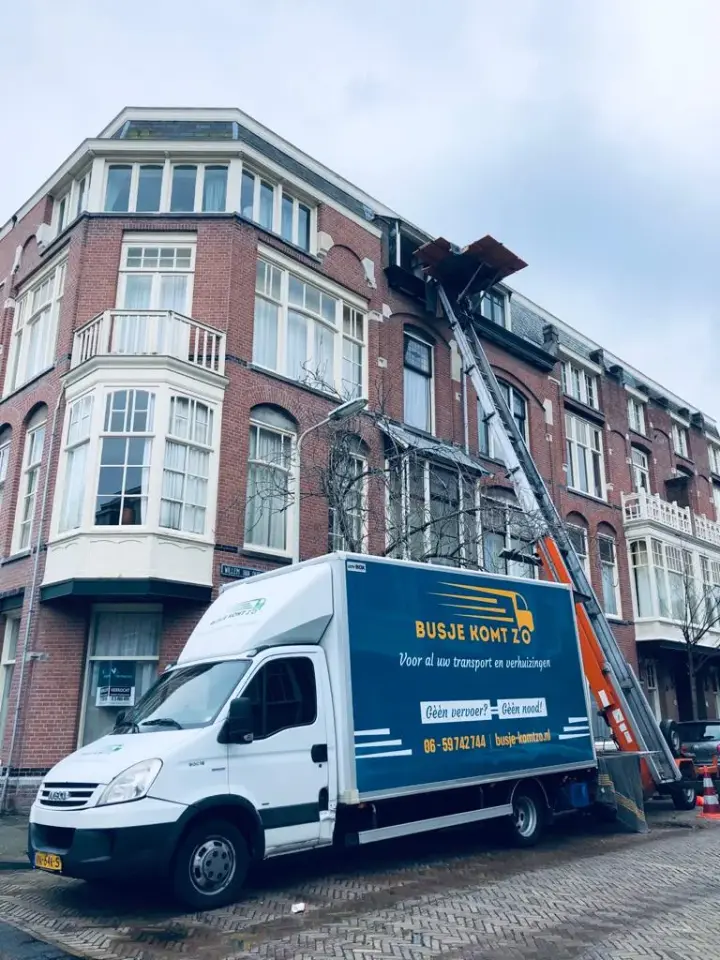

Particulier verhuizen
Dragen, rijden, demonteren en weer opbouwen, van een studio in de binnenstad tot een eengezinswoning in Leidsche Rijn.
2 verhuizers voor €71,40 per uur
Busje komt zo is een verhuisbedrijf uit Utrecht: een familiebedrijf met eigen verhuiswagens en een eigen verhuislift. U betaalt €35,70 per verhuizer per uur en spreekt na de opname één vaste prijs af.
Dagelijks bereikbaar van 07:00 tot 22:00. Geen voorrijkosten binnen Utrecht en geen weekendtoeslag.

We verhuizen appartementen, bovenwoningen en eengezinswoningen binnen de stad, en verhuizen u ook naar of vanuit de regio. U werkt met een vast team, eigen verhuiswagens en een eigen verhuislift. Kies wat bij uw verhuizing past; alles is ook te combineren.
Dragen, rijden, demonteren en weer opbouwen, van een studio in de binnenstad tot een eengezinswoning in Leidsche Rijn.
2 verhuizers voor €71,40 per uur
Kantoren en bedrijfsruimtes, ook interne verhuizingen binnen hetzelfde pand, gepland rond uw werktijden.
3 verhuizers voor €107,10 per uur
Onze eigen lift met bediening, voor smalle trappen, grachtenpanden en hoge etages.
Prijs vooraf afgestemd
Een woning of pand leeghalen, afvoeren en bezemschoon opleveren, ook na een overlijden.
Vaste prijs vooraf
Zit er tijd tussen het oude en het nieuwe adres, dan slaan we uw inboedel tijdelijk op.
Prijs vooraf afgestemd
Moet het snel? Bel ons, dan hoort u direct wat er vandaag of morgen nog kan.
Bel 085 050 8282
U betaalt €35,70 per verhuizer per uur, inclusief btw (€29,50 exclusief btw). Daar komt de bus of verhuiswagen bij, en de reiskosten van €0,79 per gereden kilometer. Na een beoordeling van uw verhuizing spreken we vooraf een vaste prijs af, zodat u achteraf niet voor verrassingen staat.
2 verhuizers (€71,40 per uur) en een bestelbus (€114,95 per klus), voor een klus tot en met 4 uur.
Rekenvoorbeeld 4 uur: €400,55
2 verhuizers (€71,40 per uur) en een ruime verhuiswagen (€151,25 per klus).
Rekenvoorbeeld 6 uur: €579,65
3 verhuizers (€107,10 per uur) en een verhuiswagen (€151,25 per klus), voor veel of zware spullen.
Rekenvoorbeeld 6 uur: €793,85
Rekenvoorbeelden inclusief btw en exclusief reiskosten. Een verhuislift, inpakservice of opslag stemmen we vooraf met u af. Minimale afname 4 uur.
Utrecht heeft eigen regels voor verhuiswagens. De meeste verhuizingen kunnen gewoon voor de deur, maar in de binnenstad en in straten met venstertijden moet u vooraf iets regelen. Zo zit het:
Bron: Gemeente Utrecht, verkeersregels verhuiswagen
Woont u in een grachtenpand of een oude bovenwoning met een steile trap? Dan is onze verhuislift met bediening vaak de veiligste weg naar binnen. Vermeld bij uw aanvraag of u in de binnenstad woont of een straat met venstertijden heeft; dan nemen we dat mee in de planning.
Elke wijk vraagt om een andere aanpak. Dit zijn de situaties die we het vaakst tegenkomen, en waar we in de planning op letten.
Smalle straten, steile trappen en weinig ruimte voor de wagen. Vaak met verhuislift en een goed geplande laadplek.
Veel nieuwbouw en appartementen met een lift. We letten op liftmaten, galerijen en de afstand tot de voordeur.
Veel portiek- en galerijflats. Trappen en loopafstand bepalen hier hoeveel verhuizers we inzetten.
Een mix van eengezinswoningen en appartementen. We beoordelen per adres de toegang en de parkeerruimte.
Ons adres: De Brauwlaan 4, 3526 XS Utrecht. De kaart van Google laadt pas na uw klik.
Een eerlijke vaste prijs begint bij de situatie op beide adressen, niet bij alleen het woningtype. In Utrecht kunnen de afstand tot de voordeur, de trappen en de laadruimte per straat flink verschillen.
Tel meubels, apparaten en dozen per kamer. Met de m³ calculator heeft u in een paar minuten een goede indicatie.
Noteer etages, trap of lift, galerijen en de loopafstand naar de plek waar de wagen kan staan.
Geef beide adressen door. Woont u in de binnenstad of een straat met venstertijden, zeg het erbij.
Uw verhuisdatum, en of u hulp wilt bij inpakken, demonteren of opbouwen.
Komt u in Utrecht wonen? Wij regelen het dragen, rijden en plaatsen. Een paar dingen regelt u zelf bij de gemeente, en die kunt u het beste vroeg in de planning zetten.
Controleer de actuele regels en termijnen op utrecht.nl. Alles wat u rond uw verhuizing moet regelen, staat in de verhuischecklist.
Dan zijn twee adressen in dezelfde stad vaak toch heel verschillend. Een bovenwoning in Lombok met een steile trap vraagt een andere aanpak dan een appartement met lift in Leidsche Rijn. Beschrijf daarom de situatie bij vertrek én aankomst. Foto's of afmetingen van grote meubels, zoals een hoekbank of kast, helpen ons om het juiste aantal verhuizers en de juiste wagen te plannen.
Op de verhuisdag beschermen we meubels met verhuisdekens en wikkelfolie, demonteren we wat niet in één stuk de trap af kan, en zetten we alles op het nieuwe adres weer op zijn plek.
Verhuist u van Utrecht naar een plaats in de omgeving, of andersom? Ook dan rijden wij. Zo'n verhuizing plannen we op dezelfde manier: we bekijken beide adressen, de route en de toegang, en u krijgt één vaste prijs. De reiskosten zijn €0,79 per gereden kilometer, inclusief btw. Per plaats leest u waar we op letten.
Klanten in Utrecht geven ons een 4,9.
Lees wat ze over hun verhuizing zeggen.
Over prijzen, parkeren en de binnenstad. Staat uw vraag er niet bij? Bel of app ons, dan krijgt u direct antwoord.
Bij Busje komt zo betaalt u €35,70 per verhuizer per uur, inclusief btw. Met twee verhuizers en een bestelbus kost een klus van 4 uur ongeveer €400,55, exclusief reiskosten. Na een beoordeling spreken we vooraf een vaste prijs af.
Ja. Op een parkeervak mag u laden en lossen zonder parkeergeld te betalen. Houd in- en uitritten vrij en houd rekening met venstertijden en de zero-emissiezone in de binnenstad.
Alleen als u buiten de venstertijden voor bevoorrading wilt laden of lossen in een straat waar die gelden. Dan vraagt u een ontheffing aan via utrecht.nl/ontheffingvoertuig. Moet de straat worden afgezet, dan regelt u dat uiterlijk tien werkdagen vooraf met de gemeente.
Ja. We werken met eigen verhuiswagens en een eigen verhuislift. Of de lift kan worden ingezet, hangt af van de gevel, de opstelplek en de straat.
Nee. Binnen Utrecht rekenen we geen voorrijkosten, en ook in het weekend geldt hetzelfde tarief zonder weekendtoeslag.
Ja. We verhuizen binnen de stad en van en naar de regio, zoals Nieuwegein, Zeist, Houten, IJsselstein, Maarssen, Woerden en Amersfoort.